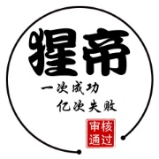
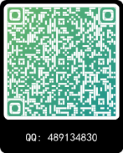

个人资料

马猩猿
国际姓名:
WRYXMQ
大陆姓名:
马猩猿
生产日期:
1998
生产地区:
吉林长春
生存领域:
手机维修
生存地址:
一方手机(兴政路店)
商业合作二维码

正文
快手头像设置
(2021年8月8日)
标签：
快手头像
将喜欢变成现实
模糊头像
大家好,俺还是那个猩帝--马猩猿呀！
今天我为大家准备的是快手头像设置.什么?你会设置?
不,绝对不可能!
哈哈,别回绝这么快嘛.我说的可是将"模糊"图片设置成图像
不,绝对不可能!
别老不可能了,看我操作
首先打开手机相册
找到我们一直不能上传的,但又很喜欢的图片
根据不同手机进行截图
看到上面截图很多同学就知道我的操作了
非常对,来到快手将图片上传.我们先用原图上传一下
没有成功,好!换我们的截图.奈斯,成功更换
快去试试吧!!!
返回博文列表
© 2021
依鹿科学院 版权所有
友情链接:
百度一下